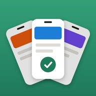

シワケプライバシーポリシー
2026年10月11日 制定
シワケ運営事務局（以下「運営者」）は、アプリ「シワケ」（以下「本サービス」）における利用者の情報を、次のとおり取り扱います。
1. 写真とスクリーンショット
本サービスは、スクリーンショットを仕分け・検索するために、利用者の許可を得て写真ライブラリを読み取ります。「選択した写真」だけを許可した場合は、選んだ写真のうちスクリーンショットだけを扱います。
スクリーンショットの解析（文字の読み取り、写っているものの判定）は、すべて利用者の端末の中で行います。写真や、写真から読み取った文字を、運営者や第三者のサーバーに送ることはありません。
解析の結果、カテゴリ、メモは利用者の端末の中にだけ保存され、アプリを削除すると消えます。
2. 外部に送信する情報（利用者情報の外部送信）
本サービスは、次の外部サービスに情報を送信します。いずれも、スクリーンショット・読み取った文字・メモ・検索した言葉・カテゴリの名前は送りません。
(1) Google AdMob（広告の表示）
送信先：Google LLC
送信する情報：広告識別子（利用者がトラッキングを許可した場合のみ）、端末の種類・OS、おおよその地域（IPアドレスから推定）、広告の表示・タップの記録
目的：広告の表示、効果の測定、不正の防止
Google のポリシー：https://policies.google.com/technologies/partner-sites
(2) Google Firebase（利用状況の分析・不具合の記録）
送信先：Google LLC
送信する情報：アプリの識別子（インストールごとに作られるID）、開いた画面、使った機能とその枚数（例：「20枚を仕分けた」）、端末の種類・OS、アプリが異常終了したときの状態
目的：アプリの改善、不具合の修正
Google のポリシー：https://firebase.google.com/support/privacy
広告識別子の利用は、iPhone の「設定」→「プライバシーとセキュリティ」→「トラッキング」からいつでも止められます。
3. App内課金
「広告を消す」の購入は Apple の App Store を通じて行われます。運営者は、支払いの情報（カード番号など）を受け取りません。購入したかどうかは、端末と App Store のあいだで確認します。
4. 運営者が受け取る情報
運営者は、利用者の氏名・メールアドレス・写真などを受け取りません。上記2の Firebase で集まる情報は、個人を特定しない形で、アプリの改善のためだけに見ます。お問い合わせをいただいた場合に限り、返信のためにメールアドレスとお問い合わせの内容を受け取ります。
5. 第三者への提供
運営者は、上記2のほかに、利用者の情報を第三者に提供しません。
6. 本ポリシーの変更
運営者は、必要に応じて本ポリシーを変更できます。重要な変更がある場合は、本サービス内などでお知らせします。
お問い合わせ
シワケ運営事務局
メールアドレス：amaneko.support+shiwake@gmail.com